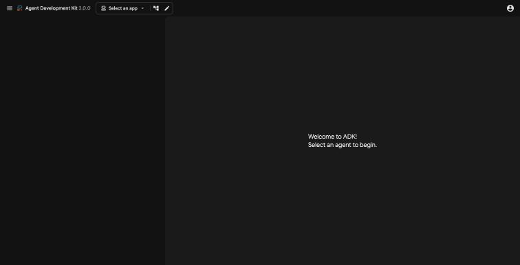
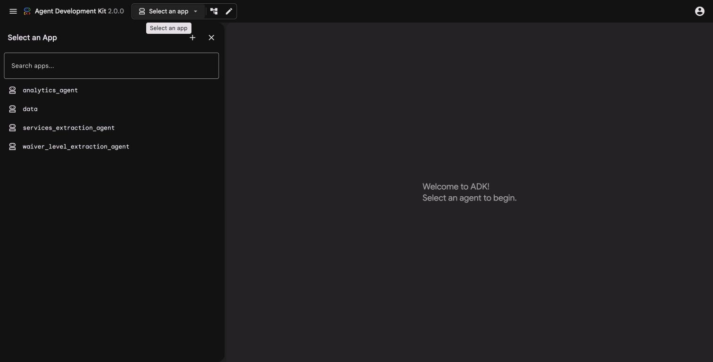
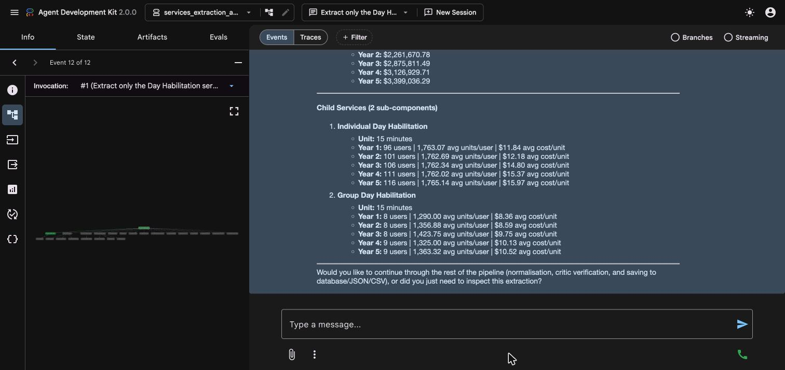
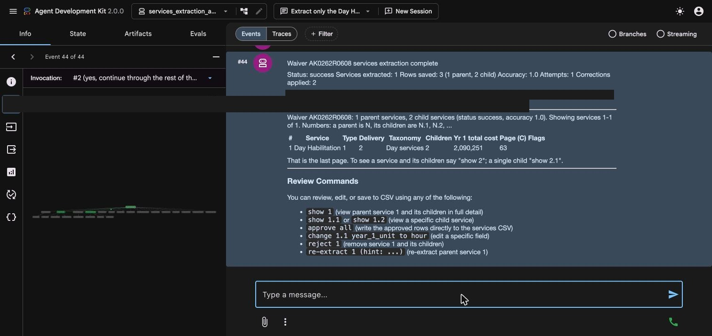
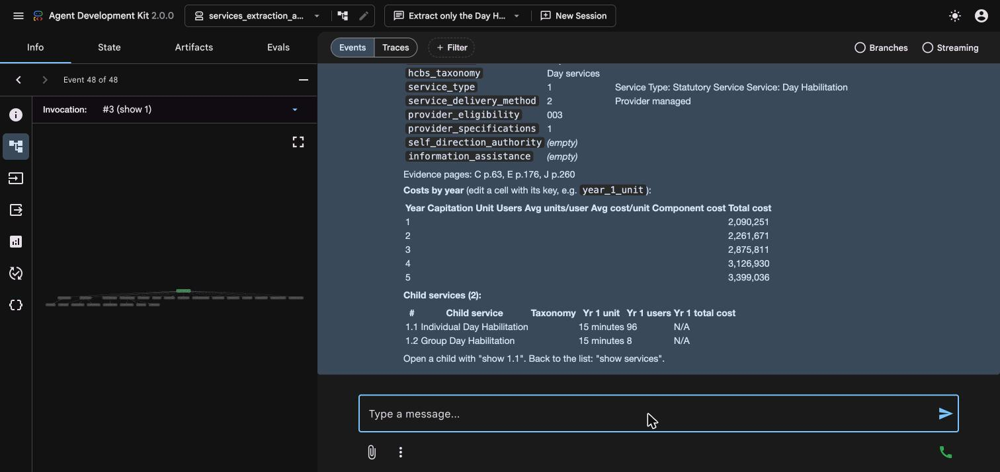
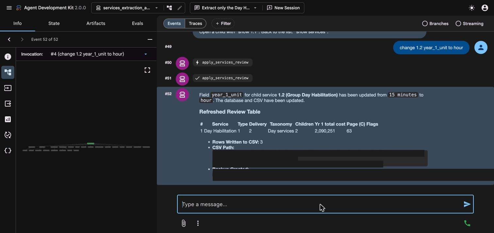
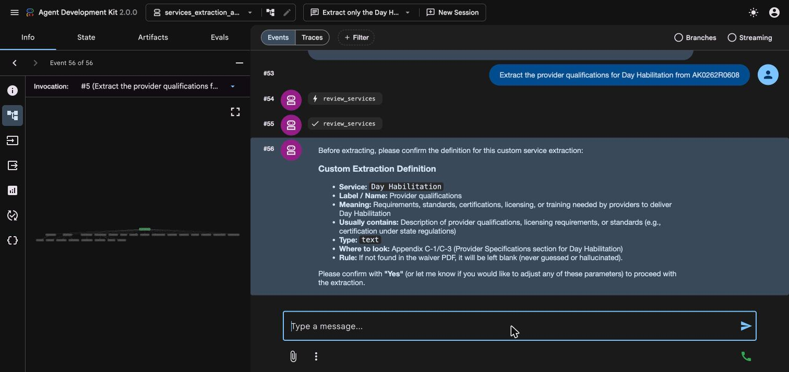
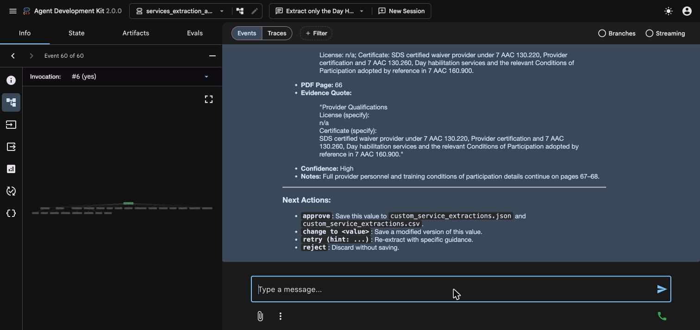

A 1915(c) Home and Community-Based Services (HCBS) waiver application lists the services the waiver pays for (for example Day Habilitation, Respite or Personal Care), with details for each one: who may provide it, how it is delivered, and for each of up to five years how many people use it, how many units each person uses and what it costs. This tool reads one waiver PDF and turns those details into one row per service, in the format of the project's service-level results sheet.
For every value it also records where it found the answer: the PDF page and the exact wording. You review the result and decide what is kept. In ADK mode the results CSV is written when you approve, change or reject (section 7.6).
Services form a two-level tree, and the whole tool works with that structure.
Each parent and each child becomes its own row. In the review step, a parent is numbered 1 and its children are 1.1, 1.2, ..., so you can always say exactly which row you mean.
| Group | Fields (internal names in brackets) |
|---|---|
| Identity | Service name, parent service (for a child), HCBS taxonomy (hcbs_taxonomy) |
| Service details (parents only) | Service type 1 to 4 (service_type), delivery method 1 to 3 (service_delivery_method), provider eligibility (provider_eligibility), provider specifications (provider_specifications), self-direction authority (self_direction_authority), information and assistance (information_assistance) |
| For each year 1 to 5 | Capitation (year_N_capitation), unit (year_N_unit), users (year_N_users), average units per user (year_N_avg_units_per_user), average cost per unit (year_N_avg_cost_per_unit), component cost (year_N_component_cost), total cost (year_N_total_cost) |
The results CSV has 49 sheet columns plus Row Type, Parent Service and Waiver Key. Section 7.3 explains the codes used in the service details.
| Mode | What it is | Best for |
|---|---|---|
| ADK mode (sections 4 to 8) | A chat window in your web browser. You type plain-English requests and the tool answers, one waiver at a time, with a review step before anything is saved to the CSV. | Extracting and reviewing a waiver, fixing individual services or fields, extracting an extra value about a service. |
| Pipeline mode (section 9) | Commands typed in a terminal that process one waiver or many in a row, with no chat and no review step. | Large batches, where you check the results afterwards. |
After the model reads each service, the tool checks the result before showing it to you:
Service-level extraction was checked by a person together with Claude. We are 95% confident that 96% of the extracted service-level values are correct.
Some values will still be wrong, which is why every value comes with its page and evidence, and why ADK mode has a review step.
waiver_level_extraction_agent, with its own guide.In a terminal opened in the project root, with the environment active (the prompt starts with (.venv)):
adk web . --port 8000Wait until the terminal prints a line like Uvicorn running on http://127.0.0.1:8000. Leave this terminal window open. The app stops if you close it. The terminal also prints a running log, which is the first place to look if something seems stuck. One server runs all the apps, so if you already started it for the waiver-level guide there is nothing more to start.
Open Google Chrome and go to http://127.0.0.1:8000. You see the ADK welcome page (Figure 1). Click Select an app and choose services_extraction_agent (Figure 2).


CACHE_GCS_BUCKET in .env, a bucket named <PROJECT_ID>-waiver-pdf-cache is created in your project the first time it is needed, which requires permission to create buckets. See Appendix A.Click in the terminal window and press Ctrl+C. Your saved results are not affected.
The services app uses the same chat window as the waiver app.
| Part of the screen | What it does |
|---|---|
| Message box (bottom) | Type your request and press Enter. Everything is plain English. |
| New Session (top) | Starts a fresh conversation. Click it before starting a different waiver. Results already saved to files are not lost. |
| Events / Traces (top of the chat) | Events shows the conversation and each step the tool takes (the grey tool-call chips). Traces shows how long each step took and how many model calls were made, which is the number that drives cost. |
| Info, State, Artifacts, Evals tabs (left) | Info shows details of the event you click. State shows the data the session holds in memory; it also shows file paths from your computer, so keep that in mind before sharing a screenshot. Artifacts and Evals are ADK developer features this tool does not use. |
Hi, what can you do? at any time for a summary.You can identify the waiver in several ways:
Extract the services in PA0324R0600. The PDF is looked up in the default folder (data/pdfs_267_latest).The tool hands the job through a series of specialist steps. You can watch them appear as grey chips in the chat (Figure 3).
| Step (tool or specialist) | What it does |
|---|---|
get_pdf_path | Finds and confirms the PDF. |
discover_service_list | Reads the PDF's form data and works out the list of services. If the waiver was already extracted at waiver level, it uses that list; otherwise the model finds the services in the PDF. The list is cross-checked against the number of service blocks in the form data. It also reuses any services already saved by an earlier run (section 6.5). |
correlate_services_and_taxonomy | Compares the service list with the form data and the taxonomy information and reports how confident the match is. |
get_waiver_metadata | Gets the waiver's state, title and file name. |
service_extraction_agent | Extracts one service per request, with its children, in one model call. This repeats for every service in the list, one after another, and is the longest part of a run. |
services_normalisation_agent | Tidies and standardises the extracted values. |
services_critic_agent | Checks the results against the form data and the consistency rules, applies corrections it is sure about, and decides: pass, attempt2 (re-read some services) or human (needs a person). |
services_reextraction_agent (only if needed) | Re-reads the flagged services once, then normalisation and the checker run again. This is the last attempt. |
infer_taxonomy and finalize_and_save | Fills in missing taxonomy values and saves services.json, the evidence file and the database rows. It does not write the CSV. |
review_services | Builds the review table you check (chapter 7). |

Time and cost depend on how many services the waiver has. There is one extraction call per service, plus the discovery, checking and any re-reading. In our test, extracting one service and running it through the rest of the pipeline took about 4 minutes: roughly 45 seconds to discover the service list, about a minute to extract the service, and the remainder for normalising, checking and saving. A waiver with 15 services is therefore a much longer run.
When the pipeline finishes, the tool prints a short summary, then the first page of the review table (Figure 4).

| Line | Meaning |
|---|---|
| Status | success: the checker passed. human_review_required: some flags could not be resolved automatically, so look at them in the review. validation_failed: accuracy was below 85% and the result did not pass; check it in the review. |
| Services extracted | The number of parent services. |
| Rows saved | Total rows, split into parent and child rows. |
| Accuracy | The checker's score for this waiver. The evidence and the flags in the review give the detail. |
| Attempts | 1, or 2 if flagged services were re-read. |
| Corrections applied | How many values the checker corrected from the form data. |
| Output | The location of the saved services.json. |
If the status is human_review_required, the tool also tells you how many flags and human-queue items remain. Open the flagged services in the review (section 7.4) and decide what to do.
Each service is saved to a checkpoint file as soon as it is extracted. If a run stops part-way, start the app again, open a new session and ask for the same waiver. The tool finds the checkpoint, reuses every service that was already extracted and extracts only the rest. It tells you how many services were reused, which is why the run is faster than a full one. Only if you ask for a completely fresh extraction does it ignore the checkpoint.
You do not have to run the whole waiver. Name the services you want, for example:
Extract only the Day Habilitation service from AK0262R0608Re-extract Respite for PA0354R0507Fix the self-direction fields on Community Participation Support, it is provider-managed onlyThe tool then runs targeted mode: it finds the PDF, loads what is already good from the checkpoint (cheap, no extra model calls), and asks the extraction specialist to read just the services you named, one model call each. Whatever you told it ("the cost table is on pages 210 to 215", "this field should be X not Y") is passed along as guidance for that attempt only. A re-extracted service replaces the old entry; it is never duplicated.
The tool does not save automatically after a targeted extraction. It shows you the result and asks whether to continue through the rest of the pipeline (normalise, check, save), or whether you only wanted to look. Answer yes, continue and save it to fold the fix into a proper saved result, after which the review table appears.
If you ask for work without naming a waiver, for example Process the next waiver, Do the next 5 or Continue the batch, the tool picks the waivers itself:
data/pdfs_267_latest) in alphabetical order.It then runs the full extraction for one waiver at a time, finishing each one (and reporting its result) before starting the next. Your request counts as approval for the whole batch: it stops only if something needs a decision, such as a waiver that errors out. Queue mode does not pause for review. At the end it gives a summary across all the waivers (status, accuracy, services and rows for each, and how many are still pending) and asks whether to run another batch; it never starts a second batch on its own. You can review any finished waiver later with Review the services for <KEY>.
The review is a two-level tree. A parent service is numbered N. Its children are N.1, N.2, N.3, ...
2) always means the parent and all of its children.2.3) means just that one child.The numbers are fixed while you review. After you reject something the removed rows are gone, so the tool shows a refreshed table with the new numbers; always use the numbers in the latest table.
The first table has one line per parent service, 50 at a time. Say show next page for the next 50, or show all to see every parent at once.
| Column | Meaning |
|---|---|
| # | The parent's number. |
| Service | The service name. |
| Type, Delivery | The service type and delivery method codes (section 7.3). |
| Taxonomy | The HCBS taxonomy category. |
| Children | How many child services it has. |
| Yr 1 total cost | The year 1 total cost. |
| Page (C) | The PDF page in Appendix C where the service is described. |
| Flags | How many problems the checker flagged for this service. Open a flagged service to see them. |
| Field | Codes |
|---|---|
service_type | 1 = Statutory Service; 2 = Extended State Plan Service; 3 = Supports for Participant Direction; 4 = Other Service |
service_delivery_method | 1 = Participant-directed as specified in Appendix E; 2 = Provider managed; 3 = Both |
provider_eligibility | 1 = Legally Responsible Person; 2 = Relative; 3 = Legal Guardian. If all apply, 123. An option that does not apply is coded 0, for example 023, 120 or 103. |
provider_specifications | 1 = agency; 2 = individual; 3 = both |
self_direction_authority | 1 = Employer Authority; 2 = Budget Authority; 3 = Both. Blank if the service does not qualify for self-direction. |
information_assistance | 1 = Yes |
year_N_capitation | 1 = Yes, 0 = No |
year_N_component_cost | Calculated as users times average units per user times average cost per unit. Compare it with the figure in the waiver. |
Type show 1 to open parent 1 (Figure 5). You see its fields with the evidence for each, the pages where it was found in Appendices C, E and J, a table of costs by year, the checker's flags with their reasons, and a table of its children.

Type show 1.1 to open one child. A child shows its name, taxonomy and its own year-by-year units, users and costs. Type show services to go back to the list.
search respite lists every parent or child whose name or taxonomy contains the word, each with its number, so you can open it with show <number>. You can search for several words separated by commas.
| Type this | What happens |
|---|---|
show 2 / show 2.3 | Opens a parent (with its children) or one child. |
show next page / show all / show services | Next 50 parents / every parent at once / back to the list. |
search <words> | Finds services and children by name or taxonomy. |
change 2.2 year_1_unit to hour | Changes one field of one row. Use the field names shown in the review (section 1.2). Works on a parent too: change 3 hcbs_taxonomy to 08010. |
reject 3.2 | Removes one child. |
reject 3 | Removes parent 3 and all its children. The tool tells you so when it does. |
re-extract 2 (hint: ...) | Re-reads parent 2 from the PDF, with your hint. Its children come with it. |
approve all | Accepts everything as shown and writes the CSV. |
approve 1-3, approve 2.1-2.4, approve all except 5 | Accepts part of the table (see below). |
Approving part of the table. approve 1-3 keeps services 1 to 3 with all their children and removes the rest. approve 2.1-2.4 keeps parent 2's own row with only children 2.1 to 2.4 and removes everything else.
approve, change and reject each write the services CSV immediately. A change or reject keeps every other service as it was extracted, so after one of these commands the rest of the table has also been saved. Before every overwrite, the previous CSV is copied to data/csv_backups/. The tool will not let you remove every service in one step.change 1.2 year_1_unit to hour edits one field. The tool confirms what it changed and shows a refreshed table (Figure 6). The saved services.json, the database and the CSV all receive the change, and the original is kept as services.pre_review.json. To undo a change, change the value back.

reject 3.2 removes child 3.2. reject 3 removes parent 3 and every child it has, because a child without its parent would be a row with no parent. The removed rows disappear from the saved result and the CSV. The original, with everything, stays in services.pre_review.json.
When you think the tool missed or misread a service, type re-extract 2 (hint: the costs are in Appendix J, page 260). The tool looks up the exact service name, then runs targeted mode (section 6.6) for it: the service is read again with your hint, the result goes through normalisation and the checker, it is saved, and the review for that service is shown again. Re-extraction always works on the parent. If you name a child (for example 2.2), the tool tells you that the parent is re-extracted and the children come with it.
approve all (or any approve, change or reject) writes this waiver's rows to data/outputs/service_level_extraction.csv, or to a different file if you name one. The CSV holds all waivers' rows: writing a waiver replaces only that waiver's rows and leaves every other waiver untouched.
If you want to write a waiver's result to the CSV without reviewing it, say so (for example write PA0324R0600 to the CSV without review). You can ask for a preview first, which shows what would change and writes nothing.
Sometimes you need something that is not one of the standard columns, for example the provider qualifications for Day Habilitation, the unit of service for one child, or which services allow family caregivers. The custom value feature extracts one such value from the PDF, shows you the evidence, and saves it separately. It never changes the standard services results.
Type, for example, Extract the provider qualifications for Day Habilitation from AK0262R0608. The tool first checks whether an existing column already covers it (taxonomy, service type, delivery method, eligibility, specifications, self-direction, units, users or costs). If one does, it shows that and asks whether you want it instead.
If the value is new, the tool shows a confirmation card (Figure 7):
The tool fills in a suggestion for anything you did not say. If the card is wrong, tell the tool what to change in plain words. You can also say "you decide". When the card is right, type yes.

After yes the tool makes one model call (about 30 seconds in our test). The result shows the value, the page, the exact wording from the PDF, the confidence and any notes, other occurrences of the same item on other pages, and your four choices (Figure 8).

| Type | What happens |
|---|---|
approve | Saves the value to the waiver's custom_service_extractions.json and adds one row to data/outputs/custom_service_extractions.csv. |
change to <your value> | Saves the value you typed instead of the extracted one. |
retry (hint: ...) | Runs the extraction again with your hint, for example retry (hint: include the provider category and type too). The hint is used for that attempt only and is not added to the saved definition. |
reject | Discards the result. Nothing is saved. |
Each row of custom_service_extractions.csv has: waiver_key, service_name, label, value, page, evidence, confidence, description, value_type, model, extracted_at and approved_at. Saving the same waiver, service and label again replaces that row.
Pipeline mode runs the same extraction without the chat window. You type a command in the terminal and it processes one waiver, or many, one after another. The program is run_services_pipeline.py.
--limit 2, and check the results and your billing before running a batch. To review a waiver you extracted this way, open it in ADK mode with Review the services for <KEY>.Open a terminal in the project root and activate the environment (section 3.2). The same .env settings are used. If the project settings are wrong, the command stops at once with a message saying what to fix.
For each waiver the program needs the list of its services. It uses, in this order: the list saved when the waiver was extracted at waiver level (overview.json), or, if there is none, or if you add --standalone, the model finds the services in the PDF. The list is cross-checked against the PDF's form data either way.
You must give exactly one of --waiver, --file, --all, --export-csv or --rebuild.
| Command | What it does |
|---|---|
python run_services_pipeline.py --waiver PA0324R0600 | Extracts the services of one waiver by key. The PDF is looked up in the default folder or in --pdf-dir. |
python run_services_pipeline.py --file /path/to/waiver.pdf | Extracts one PDF from any location. |
python run_services_pipeline.py --all | Extracts every waiver that has an overview.json (that is, every waiver already extracted at waiver level). |
--limit 10 | With --all: stops after 10 waivers. Use it to test. |
--skip-existing | With --all: skips waivers that already have services saved. |
--pdf-dir ~/Desktop/new_pdfs | Looks for the PDFs in this folder instead of the default one. |
--output-csv my_run.csv | Writes the results to this CSV instead of the default data/outputs/service_level_extraction.csv. A bare file name goes in data/outputs/. |
--standalone | Finds the service list in the PDF with the model instead of using overview.json. |
--waiver KEY --resume | After an interrupted run, skips the services already saved in its checkpoint and extracts only the rest. |
--waiver KEY --only-service "Respite" | Extracts just that one named service (one model call) and adds it to the checkpoint, with no checking and no database save. Use it to retry one service that keeps failing. Follow with --resume (or --rebuild) to fold it into the saved result. |
--rebuild KEY | Rebuilds the outputs from the latest checkpoint of a crashed run. No model calls. |
--export-csv data/outputs/my_export.csv | Exports every service saved in the database to a CSV. No extraction and no model calls. |
A pipeline command is several small instructions typed on one line. Each part that starts with two dashes (--) is an option that changes what the program does. Here is one command, taken apart:
python run_services_pipeline.py --all --pdf-dir ~/Desktop/new_pdfs --output-csv my_run.csv| Part | What it means |
|---|---|
python run_services_pipeline.py | "Run the services extraction program." |
--all | "Do every waiver that has already been extracted at waiver level (every waiver with an overview.json), one after another." |
--pdf-dir ~/Desktop/new_pdfs | "Find the PDFs in this folder." It is the folder called new_pdfs on your Desktop; the ~ is shorthand for your own home folder. Without this option the program uses data/pdfs_267_latest inside the project. |
--output-csv my_run.csv | "Save the results in a spreadsheet file called my_run.csv" in data/outputs/ instead of the usual results file. |
Put together, it says: "For every waiver that has already been extracted at waiver level, take its PDF from the new_pdfs folder on my Desktop, extract its services one waiver after another, and save the rows in data/outputs/my_run.csv instead of the usual results file." The order of the options does not matter.
Pipeline results go to the same places as in ADK mode (chapter 10). The program writes each waiver's rows into the services CSV as it finishes that waiver, replacing only that waiver's rows, and prints a summary at the end: how many waivers succeeded, needed human review or failed, the mean accuracy, and the number of services and rows (parent and child).
All paths are inside the project folder.
| File or folder | What it holds |
|---|---|
data/outputs/service_level_extraction.csv | The approved service-level results. One row per service (parents and children), all waivers together, with 49 sheet columns plus Row Type, Parent Service and Waiver Key. Created (with just the header row) as soon as the app starts. |
data/outputs/custom_service_extractions.csv | Approved custom service values, one row per waiver, service and label. |
data/outputs/<KEY>/services.json | The waiver's current result: every parent with its children, and the evidence-based values. |
data/outputs/<KEY>/services.pre_review.json | The result as it was before your first change or rejection. |
data/outputs/<KEY>/services_evidence.json | The evidence for each value (pages and wording) and the checker's flags. services_evidence.pre_review.json is its copy from before the review. |
data/outputs/<KEY>/services_review.json | A record of your review decisions. |
data/outputs/<KEY>/services_attempt1.jsonl | The checkpoint: one line per extracted service, saved as each one finishes. This is what lets an interrupted run resume. |
data/outputs/<KEY>/custom_service_extractions.json | Custom values for this waiver, with notes and other occurrences. |
data/outputs/waivers.db | The project database. Its services table holds the saved rows. |
data/csv_backups/ | A copy of the CSV taken before every overwrite. |
data/logs/<KEY>.jsonl | A step-by-step log of each run for that waiver. |
data/services_human_overrides.jsonl | An audit record of values the checker corrected from the PDF's form data. |
approve all so you know the final state is saved..env file or screenshots that show file paths you do not want shared.| What you see | What to do |
|---|---|
| The terminal says "Google Cloud project is not set", or PROJECT_ID and GOOGLE_CLOUD_PROJECT differ, and the app will not load | Open waiver_level_extraction_agent/.env. Set both PROJECT_ID and GOOGLE_CLOUD_PROJECT to your project ID (3.7). Also check that no old value is set in your shell: type echo $PROJECT_ID $GOOGLE_CLOUD_PROJECT. Restart adk web. |
| A permission error (403) or "billing" error from Google | Check that billing is enabled for the project and that the Vertex AI API is on (3.6). Re-run gcloud auth application-default login and make sure you signed in with an account that has access to that project. |
| A permission error mentioning storage or a bucket | Large PDFs are cached in a Cloud Storage bucket. Your account needs permission to create or use one. Create a bucket yourself in the console and put its name in .env as CACHE_GCS_BUCKET (Appendix A). |
| A "quota", "resource exhausted" or 429 error | Google is limiting how fast you can make requests. Wait a few minutes and try again; in a batch, leave a gap between waivers. |
| Nothing appears for a long time after you press Enter | A single service can take about a minute, and the first request after starting the app can take 2 to 3 minutes. Look at the terminal: new lines mean it is still working. Look at the Traces view for the latest step. If there has been no activity for more than 10 minutes, stop the app (Ctrl+C), start it again, and ask for the same waiver; finished services are reused (6.5). |
| "No services found" | The tool could not find a service list in the PDF. Check that the file is a 1915(c) waiver application and that it is the right PDF. For the command line, try --standalone. |
| Queue mode says nothing is pending | Every PDF in the folder already has services saved. Name a waiver to extract it again. |
| The status is human_review_required or validation_failed | The checker could not resolve some flags. Open the flagged services (section 7.4), compare with the PDF, then change, reject or re-extract. |
| "PDF not found" | Check the waiver key spelling, put the PDF in data/pdfs_267_latest/, or give the full path to the file. |
| The app list contains "data" | It is only a folder. Choose services_extraction_agent. |
| The page will not open at all | Make sure the terminal running adk web is still open, and that the address is exactly http://127.0.0.1:8000. If port 8000 is in use, start with another port, for example adk web . --port 8001. |
git clone <repository-url> 1915c_extraction_agent && cd 1915c_extraction_agent
python3 -m venv .venv && source .venv/bin/activate
pip install -r waiver_level_extraction_agent/requirements.txt
brew install poppler # or: sudo apt install poppler-utils
gcloud auth application-default login
cp waiver_level_extraction_agent/.env.example waiver_level_extraction_agent/.env
# edit .env: set PROJECT_ID and GOOGLE_CLOUD_PROJECT to your project IDcd 1915c_extraction_agent
source .venv/bin/activate
adk web . --port 8000
# open http://127.0.0.1:8000 and choose services_extraction_agent| Type | Purpose |
|---|---|
Extract the services in <WAIVER KEY> | Run a full services extraction. |
Extract only the <service> service from <KEY> | Extract or re-extract named services (targeted mode). |
Process the next waiver, Do the next 5, Continue the batch | Queue mode (no review stops). |
Review the services for <KEY> | Open the review table for a waiver already extracted. |
show N, show N.k, show services, show next page, show all, search <words> | Move around the review. |
change N.k <field> to <value> | Correct one field (saves immediately). |
reject N, reject N.k | Remove a parent with its children, or one child (saves immediately). |
re-extract N (hint: ...) | Re-read a parent service. |
approve all, approve 1-3, approve 2.1-2.4, approve all except 5 | Save the results. |
Extract the <value> for <service> from <KEY> | Start a custom service value. |
yes, approve, change to <value>, retry (hint: ...), reject | Answer the custom value prompts. |
| Command | Purpose |
|---|---|
python run_services_pipeline.py --waiver KEY | One waiver. |
python run_services_pipeline.py --file /path/to.pdf | One PDF from anywhere. |
python run_services_pipeline.py --all --limit 2 --skip-existing | A small test batch of new waivers. |
python run_services_pipeline.py --waiver KEY --resume | Continue an interrupted waiver. |
python run_services_pipeline.py --rebuild KEY | Rebuild outputs from a checkpoint (no model calls). |
python run_services_pipeline.py --export-csv data/outputs/my_export.csv | Export saved services (no model calls). |
.env settings| Setting | Meaning |
|---|---|
PROJECT_ID | Your Google Cloud project ID. Change this. Used by the command-line programs. |
GOOGLE_CLOUD_PROJECT | Your Google Cloud project ID. Change this. Used by the ADK web app. Must equal PROJECT_ID. |
GOOGLE_GENAI_USE_VERTEXAI | Leave as TRUE. Tells the tool to use Google Cloud's Vertex AI. |
LOCATION | The Google Cloud region. Leave as us-central1. (The Gemini 3.7 model is automatically sent to Google's global endpoint.) |
CACHE_GCS_BUCKET (optional) | A Cloud Storage bucket used to cache large PDFs during services extraction. If it is not set, a bucket named <PROJECT_ID>-waiver-pdf-cache is created on first use, which needs permission to create buckets. Set it to the name of a bucket you already have if you cannot create one. |
PDF_DIR, OUTPUT_DIR, LOG_DIR | Folders for source PDFs, results and logs, relative to the project root. Leave as they are unless you have a reason to move them. |
The Google Cloud console screenshots and the exact click paths are in Google's own documentation, which stays up to date with the console's layout:
Google, Google Cloud, Vertex AI and Gemini are trademarks of Google LLC. Page layouts and product names in Google's documentation may change; use the current version of those pages.
| Term | Meaning |
|---|---|
| 1915(c) waiver | A Medicaid program that pays for home and community-based services as an alternative to institutional care. |
| Waiver key | The identifier of one waiver application, such as PA0324R0600. Not the same as a Google Cloud project ID. |
| Parent service / child service | A service as the waiver names it, and a variant of it with its own users and costs. Numbered N and N.1, N.2, ... in the review. |
| HCBS taxonomy | The standard category scheme for home and community-based services. |
| AcroForm | The fillable-form data embedded in many PDFs. The tool compares what the model read with it. |
| Checker (critic) | The step that verifies the extraction, applies safe corrections and flags what does not add up. |
| Flag | A problem the checker found, for example a parent total that does not match its children's costs. |
| Checkpoint | The file where each extracted service is saved as it finishes, so an interrupted run can resume. |
| Queue mode | Asking for "the next waiver(s)" so the tool picks which waivers to process. |
| Targeted mode | Extracting or re-extracting only the services you name. |
| Project ID | The unique ID of your Google Cloud project, for example my-waiver-project-123456. |
| ADC (Application Default Credentials) | The way Google's tools find your sign-in on your computer, set up with gcloud auth application-default login. |
| Vertex AI | Google Cloud's service for running AI models, including Gemini. |
| ADK (Agent Development Kit) | The framework that provides the chat window and runs the tool's steps. |
| Evidence | The exact wording from the PDF, with its page number, that an answer is based on. |
| Session | One conversation in the chat window. Start a new one with New Session. |
| Operating system | macOS (not tested on Windows) |
| Python | 3.12 |
| Google ADK | 2.0.0 |
| Model | Gemini 3.7 Flash (through Vertex AI) |
| Browser | Google Chrome |
| Waivers used in screenshots | AK0262R0608 (Alaska), service Day Habilitation; the custom value was read from that waiver's PDF |
Windows and Linux commands are given for convenience but were not run for this guide. The pipeline-mode options were documented from the program's help text.